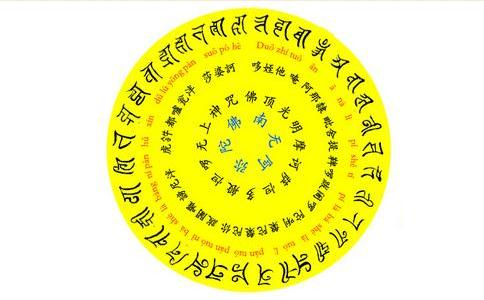

南无本师
无上甚深微妙法，百千万劫难遭遇。我今见闻得受持，愿解如来真实义。
缘起算起来我修持
1、自己的身体状况越来越好，抗冻抗热能力越来越强，冬天不怕冷，夏天不怕热（并无刻意追求）。
2、在好的状态下（有时），中脉气机充盈，闭目时可见性光（淡黄色）。
3、烦恼逐渐减少，基本上没有粗重的烦恼，心地清静、柔顺，慈悲心容易升起。
4、从不能吃素到吃全素，再到日中一食（不太严格）。
5、原来的一身债务别人帮我还了，经济状况明显自然改观。
6、家人的身体也比以前好很多，父亲原来有较严重的银稍病（全身从头到脚都是，没有一块好皮肤，奇痒难熬）、糖尿病严重，为此非常烦恼，花了不少冤枉钱。现在都得到了较好的控制和减轻。
7、女儿
更重要的是，在修持楞严咒的过程中及其后，有缘遇（读）到了《首楞严三昧经》、《大佛顶首
当然，这些只是修持楞严咒的点滴受用心得，还谈不上成就。本来应该在有一定成就之后再写，会更好一些，但在看到网上大家对佛法、对真言
目的在于破除人们对它的误解、迷惑和神秘感，用现代的较为科学的语言向大家阐述楞严咒为何具有开发心智、转识成智的功能。故题名为“楞严咒：转识成智的根本大法”。副标题为何是“楞严咒全息量子引论”？因为我在此前对全息量子场做过一些研究，而且根据现代物理学特别是量子真空物理的研究成果，可以说全息量子场简直就是佛学最具科学性的物理学注脚！也许有些佛友或法师看到用“全息论”来解释佛法会不以为然，但在下认为，只要能让人们增加对佛学的认识和了解，又何妨作为一种方便
念诵咒语在修持中的作用是什么？应当如何修持咒语？对这些神秘的概念，真正搞明白的可以说是少之又少，而真正获得咒语大成就的，更是凤毛麟角，以至于大家对咒语的理解，不是流于
为什么要修持咒音？就是要让咒音转化为光音，引发体内光明，并进入到光明大定中。咒语不是为召神请鬼而设的，它是一种通过光音的修持进入光明三昧，进而见法身境界、明心见性的秘密方便。这是咒语真正的密意。所以在藏密中，真言乘又叫持明乘。持明乘有两层意思：一是修持光明大定（光明三昧）；二是往生时，心识能够保持清醒明朗，记忆不会丢失。因为密咒是要念诵十万遍以至于千百万遍的，并可激活深层心识，故有记忆的功能。其实，咒语并不是佛家独有的法门，在古印度的
大家知道，佛法（佛经）是佛陀应对各种因缘和根基的众生所说的法，而众生的因缘、根基（心智）是有层次差别的。虽然从究竟果位来讲，众生皆具
1、佛法从心智水平上来讲，可分为胜义谛（第一义谛）和世俗谛两大层次。这是我们在学习和研究
2、佛法从
3、佛法的整体架构根据《华严经》、《解深密经》、《
第一华严教。为佛陀成道最初之
第二有教。为破众生实我之执，于
第三空教。为破除诸法实有之执，在灵鹫山等说《摩诃般若波罗密多经》等，开示诸法皆空之理，令中根品，悟彼法空，舍小取大，是为第二时法空之说。此时期乃佛陀为
第四中道教。为破除执着有空，于解深密等会，说一切法
第五法华
说实在的，在我未读到《首楞严三昧经》之前，还未对《大佛顶首楞严经》产生过如此坚定的信心；而在读到《首楞严三昧经》之后这种信心就决不会再动摇！何以故？其实这两部《首楞严经》可以分别归属《华严经》和《法华经》两大体系。《首楞严三昧经》可归入华严体系，因为都是以究竟果位说为主，是佛在一乘法身境界中对坚义菩萨等大菩萨所说，由果说因；而《大佛顶首楞严经》可归入法华体系，因为也是从因地说起（如来密因），是佛在室罗筏城、祇桓精舍对阿难等大众所说，由因说果。 因为《首楞严三昧经》太重要了（以守护佛种、法种、僧种，令诸魔宫隐蔽不现故），但义趣太高，非十地以上菩萨不能得。故我佛慈悲哀怜众生，择机又说《大佛顶如来密因修证了义诸菩萨万行首楞严经》，用以“救护亲因度脱阿难及此会中性
楞严咒的重要性及其功德在《大佛顶首楞严经》及前辈大德的相关开示中，都有详细的介绍，这里就不再重复。在此我想向大家说的是楞严咒是整个显密佛法中最为独特的无上大法，为什么这么说呢？您或许会说，佛说的四万八千法门，法法平等，无有高下，只要应人对机，都是无上大法。这个说得没有错，但那是从果位上、究竟位说的。在因地上每个人的因缘根基不同，选择修持的法门不同，其成佛的快慢也不同。正如佛所言，一般的法门可能要三大阿僧祗劫才能成佛，而楞严咒是佛说的唯一“不历僧祗获法身”的显宗方法。
为什么楞严咒如此重要呢？佛法中的陀罗尼（总持）、真言、诸佛、菩萨的心咒、名号等等，多如恒河沙数，法法平等，为什么说楞严咒为咒中之王呢？你可能会说“
这就要从咒语的基础原理讲起了。我们知道佛经中的陀罗尼、咒语都是从梵文音译过来的无意义的文字组成。陀罗尼、咒语一般是不能义译的，因为陀罗尼、咒语是整个经文的浓缩，是全息文字，一个字等于多个甚至无量字，故不可义译。陀罗尼、咒语的组成一般包括至少一个“种子字”，如唵、嘛、阿、呢、吽等。
由现代物理学可知：声与光都是波动的能量场，而且二者可以互相转换。它们对人体可以产生积极或消极的影响。这些种子字大部份取自然
为了对楞严咒的组成原理有一个较深入的探讨，我们先对全息量子场做个简单介绍。
上世纪一系列令人惊奇的实验证据之一就是发现时空中充满了大量所谓的潜在能量。量子物理学已经认识到，物质是由分子、原子、原子核、电子、质子、中子、各种介子、超子、一直到中微子等量子组成的。宇宙不同层次中各种物质本质都是能量的聚集，而所谓“真空”实质上是量子场的基态（非激发态）。
量子场论为我们描述了一个场与粒子相统一的物理图景：宇宙空间中同时互相重迭、层层相套地充满了各种场，每种量子场各对应于一种粒子。电磁场对应着光子，电子场对应着电子，中微子场对应着中微子等等，它们同时存在于全空间。当量子场的能量增加称为激发，处于激发态时，表现为出现相应的粒（量）子。场的不同激发态所对应的粒子及其状态是不同的，粒子的产生和湮灭代表量子场的激发和退激。
各种量子场的能量最低的状态称为基态，当量子场处于基态时，场不能通过状态改变释放出量子，这时量子场就表现为所谓的“真空”状态。这时每个量子场因处于基态而都不显现出相应的粒子，整个空间都没有可观测的粒子（实粒子）存在。量子真空物理学研究表明，真空中尽管不存在大时空尺度下可观测的实粒子，但在极小的时空尺度下会产生正反虚粒子对，如果外界不输入能量，这些虚粒子对会迅速湮灭。因此，真空中不断地有各种虚粒子对的产生、湮灭和相互转化的现象，称为真空涨落。
物理学家惠勒说过，“真空物理学”可能是一切事物的精髓。粒子越小（越微观），能量越大，宇宙（万物）的演化就是能量在同一层次间和不同层次间的相互作用、转移和转化。不同层次能量包括：宇观天体（宇宙系、银河系、恒星系）的场能；我们周围物体的机械能（动能、势能），自然界中的声、光、电、磁能，生物能，分子间的化学能，原子间的核能，粒子对湮灭的量子场能等。
事实上，任何物体都是与其它许许多多个物体同时同地存在于同一空间中，只不过这个物体处于激发态，其他物体处于非激发态。量子物理学已经认识到普朗克常数h标志着人类观测的极限，是体现空间层次性的一个例证。我们人类感觉、接触到的基本上是分子构成的宏观物体，我们所在的是位于分子和星球之间的空间。事实上，量子真空物理还认识到，电子到原子核之间也是一个极其广阔的空间。现代弦理论的T对偶性，把一根弦绕着一个紧致维形成环圈时所出现的两类粒子（即振动粒子和环绕粒子），联系了起来。T对偶性理论认为，半径为R的圆的环绕粒子与半径为1/R的振动粒子是相同的，反之亦然。这样，如果宇宙缩小到小于普朗克长度（10^-35米），宇宙将转变为一个向内（以普朗克常数h为零，负向）的对偶宇宙，随着原先宇宙的缩小而不断增大。因此在这样极小的尺度上，宇宙仍然看起来象大尺度一样。某些科学家已经开始发展亚量子理论。
我们认为多层量子场具有全息同构的特征，因此将全息引入量子场，称为全息量子场。全息量子场是一个具有启发性的概念，它可以用来阐明宇宙时空的全天相干、不同量子之间的变换、生物种子的遗传等等诸多奇异现象。可以说，多层次量子场的物理实在性是无可争议的。这就使我们可以合乎逻辑地假设，多层亚量子场就是宇宙全息量子场。这种论述提供了一种可以起到自然界有序化作用的物理场。如果接受这种论述，我们就会明白佛经中所说的“于一毫端现宝王刹”、“一即一切、一切即一”诚非虚言。
前面，我们已经对全息量子场有了一定的了解，为了说明问题，在此进一步给出与之相关的一些重要概念。
（1）全息态：是指这样一种物质或能量系统状态，其中的任一局部区域（子系统）都与整个系统具有一一对应的关系。也就是说，全息系统的任一子系统都包含整个系统的全部信息。
从本质上来讲，宇宙中的一切物质、能量系统都包含宇宙的全部信息，因此，宇宙中的任一物质、能量系统都是全息系统。但是，一般来说，物质、能量系统中的任一子系统所包含的整个系统信息的潜、显或激发程度是不同的。只有在量子场的层次上才能显现出所有的信息。
（2）全息度：这种系统中任一子系统所包含的整个系统信息的潜、显或激发程度，称为系统的全息度。例如，受精卵子所包含的动物信息，是处于激发状态，而动物的一般细胞所包含的动物信息是处于休眠状态，因此，受精卵子的全息度比一般的动物细胞要高。同理，植物的种子的全息度也比一般植物细胞的要高。任何系统的现实整体性都是从其某个或某些部分中显化出来的，是潜在整体信息的显现。
潜在信息的概念，可以从两方面来理解：从本体上讲它是尚未被物质表现出来、未获得实在形态的信息，只以浓缩的形式隐藏地存在着。如种子中的生物信息就是这种潜信息，而现实的生物体所表现出的信息就是显信息；从认识论上讲潜信息是尚未被人们认识的信息。
（1）从时空统一的角度理解。现在空间上的事物及其结构是历史的产物，切确说是沉积、“静止”下来的历史，所以可以一般地说，空间是时间的积淀；时间过程则是某种初始物质的展开，正如大树是种子的展开一样。从现代宇宙学的成果和生物进化论来看，万物和生物都具有共同的起源。不同层次的事物各有自己的起源，所有事物最终都归总到宇宙初始状态这一共同起源。因而我们把万物的发展过程看作是同源分枝异化的过程，这种异化过程就是向不同的信息层次特化。特化就是对某种信息的强化过程。
（2）全息是以承认差别为前提的。有些人认为全息统一就是否认差别，这是对全息的极大误解。实际上全息正是以差别为其存在前提的，没有差别就没有信息，也就无“息”可全。全息是事物的同一性与差异性的辨证统一。
（3）全息是有层次性的。虽然从总体上、从潜在与显在总和上讲，每一部分都与整体全息，但就现实事物而言，全息却是有层次的。事物中所包含的全部信息无法在有限时空内一下子表达出来，因此事物只能按其固有的展现规律依次表达出潜在信息。事物只有进化到某一层次，才能表达出该层次的信息。例如生物的信息不能在原子的层次上表达出来，只有进化到生物细胞的层次才能表达出生物的信息。
（4）全息变换：一般地说，如果两个系统E（i=1,2,3,- - -）和E’（i=1,2,3,- - - ）之间存在一种变换关系T，使得
E’=T E T-1
则称T为这两个系统之间的全息变换。在物理学中，全息变换随处可见。如著名的洛仑兹变换，还有时空平移与反演、空间旋转等等。
有了全息量子场和上述基本概念，我们对佛经中所说的“于一切色示现游戏”，“ 一时现身住一切佛所”，“ 能使一劫作阿僧祇劫，阿僧祇劫使作一劫，能使一国入阿僧祇国，阿僧祇国使入一国，无量佛国入一毛孔，一切众生示入一身”等等现象，就不难理解了。
大家
楞严咒五会真言之所以能比较迅速成佛，关键就在于它是一个完备的全息系统，正好对治于众生的贪、嗔、痴、慢、疑五大根本（心所）烦恼，能方便地转识成智。其他陀罗尼或真言（咒）虽然也具有全息性，但全息度和完备性没有楞严咒高。比喻来说，其他咒是种籽，楞严咒就是种芽；其他咒是枝叶，楞严咒则是整棵树。何以故？楞严咒的全息度最高故。
（1）第一会：东方阿閦佛，梵名Aksobhya Buddha 之音译，意译为不动佛，或无嗔恚佛，又名不动如来，为金刚部主尊。阿閦佛身蓝色，坐在东方八大象王座上，五大中属水大，结触地印。能转想蕴，能除嗔毒，可转第
（2）第二会：南方宝生佛：，梵名Ratnasambhava，乃集一切福德财宝，具备万法能生的如来。宝生佛为南方宝部之主尊，佛身黄色，属地大之净相，安坐八大马王宝座上，结满愿印。能除贪毒，能转受蕴，及第七识成平等性智。
（3）第三会：中央毘卢遮那佛，梵语Vairocana Buddha 之译音，又称为
（4）第四会：西方阿弥陀佛，梵名Amitaba ，意译为无量光、无量寿之意义。阿弥陀佛易生大悲之慈心，为莲花部主尊，佛身红色，属火大，结弥定陀印，或手捧长生
（5）第五会：北方不空成就佛，梵名Amoghasiddhi，此佛能成办一切事业，为羯磨部（事业部）主尊，佛身绿色，属风大，结施
楞严咒五会真言即五方佛种智字的全息展开。种智字的
本人曾经有一年的时间专门研究脑电波，我们可以借用现代生物学中的脑电波做一个形象方便的说明：现代生物学研究表明人的脑电波可以分为四大层次，表现为β波（14－30Hz）、α波（8－13Hz）、θ波（4－7Hz）、δ波（1－3Hz）四大波段。β波段对应人的五根（眼、耳、鼻、舌、身）。所以当人睁开眼看外界、或听歌曲时，脑电波中β波的比例就会大幅增加；当人处于清静状态（比如闭目养神）时，α波的比例就会大幅增加（α波与地球大气层的振动频率基本相同）；当人处于睡眠状态时，θ波的比例就会大幅增加；而当人进入
楞严咒的修持是通过五方佛种智字咒音的频率与（阿赖耶识对应的）δ波共鸣谐振，全息展开直接进入佛华严海印三昧，是性起法门，与缘起法门根本不同。直接从果位佛性起修，借助全息种智字音光振动，引发体内光明，入海印三昧，最终入首楞严三昧。所以说是最直接、最快速的法门。
佛华严海印三昧是由果现因，对应的是大圆镜智；妙法莲华无量义三昧是由因现果，对应的是妙观察智；首楞严三昧是因果等觉、妙觉，对应的是法界体性智。从全息的意义上讲因中有果，果中含因；因是未展开的果，是种子，果是完满（全息）展现的因，是大树。
佛法中有无数三昧，都可包括在海印三昧、无量义三昧、首楞严三昧这三大三昧中。此三大三昧也是互含互融，究竟一味，其实都是佛为说法方便而设，实无三昧可得。
五、关于楞严咒的修持由上述可知楞严咒是显密圆通、转识成智的根本大法。然而，如此妙法时下修持之人却少得可怜。我想这关键原因之一是大家对它缺乏了解，认为楞严咒是一堆毫无意义的文字，所以难以产生坚定的信心；其二是楞严咒修持的难度确实比较大，光是把这几千多字的五会真言背下来，就不是一件容易的事。在下愚钝（也缺乏精进），用了二年左右才把汉语版五会真言（427句）背下来。但我认为只要能把楞严咒背下来，花再多的时间也值得，哪怕用一生的时间，也在所不惜。因为楞严咒如此殊胜的无上大法，今生有缘得遇而错过，来生不知何时才能再得相遇啊！！所以我劝大家不要怕难，要有蚂蚁啃骨头的精神，一句一句地把它背下来。
其次，修持楞严咒之前最好对佛法有一个比较全面的了解，尤其是《大佛顶首楞严经》和《首楞严三昧经》不可不读。了解的越全面、越深入、信心越强，修行起来就越快、越顺利。还有就是要发菩提心，持
还有就是在修持楞严咒之前乃至未熟练前，应持五方佛名号，并修持一些较为短小的咒。比如，我在修持楞严咒之前及过程中，除念五方佛名号外，还修持
关于咒的发音，当然是越准确越好，以梵音版为标准。但作为汉人，一开始就背诵梵音版难度太大，所以建议大家还是先背诵汉语版（427句）楞严咒，等背熟后，再逐步校准。
在每次正式的修行前，应念
愿以此功德，庄严佛
上报四重恩，下济三途苦。
所有见闻者，悉发菩提心。
尽此一报身，同生极乐国。